游戏年报是游戏在年末/周年节点给玩家生成的个人数据总结活动，类似"支付宝年度账单""网易云音乐年度听歌报告"的游戏版——玩家登录后，系统按这一年（或统计周期内）的真实游玩数据，生成一份专属于这个玩家的可视化总结页面，通常包含：
数据总结类页面：创角时间、累计登录天数/时长、段位/排名、常玩模式、本命英雄/武器、开箱记录、好友榜等——这些都是"千人千面"，每个玩家看到的都是自己的真实数据。
结果/总结页：给玩家生成一个年度称号/关键词，配合海报，可以分享出去。
任务与分享环节：引导玩家完成"查看/分享/查看他人年报"之类的任务换奖励，起到拉新/传播的作用。
他人年报：可以通过分享链接查看好友的年报（只读视角，不能操作对方的任务）。
从业务目的看，年报是一个情感向 + 传播向的运营活动：让玩家感受到"游戏记得我这一年的经历"，同时通过美观的总结页和分享机制带来自然传播（类似朋友圈刷屏的年度账单）。
从测试角度看，年报的特殊性就是：所有账号走的产品流程完全一样，但因为每个玩家的真实数据不同，导致同一套页面会呈现出成百上千种不同的数据展示分支。测年报这类"多模块×有无数据×字段取值"组合驱动的活动，QA能用的手段很有限，基本可以归成四类：
受限于登录问题，测试角色池只有那几个，每个数据字段反复改；
真数据凑不齐，只能造数据，造出来的东西又不是真数据；
数据分支量大，很难靠人工覆盖全，例如本次测试需要遍历配表一共85个分支，数据库要改138个字段，每个字段还要对长度、异常值逐一遍历修改测试；
配表的分支/文案一改，又要重新手动造数据回归；
总体而言：QA缺乏工具精确测算"85个分支的实际覆盖程度"，仅能依赖固定角色反复验证、构造数据粗略估算，覆盖率既无法量化也难以复现；每次配表变更，前期构建的测试数据即告作废。人工实现"配表分支基本全覆盖"成本高昂，且难以评估投入产出比。即便想走自动化，也要先搭框架写脚本，而游戏媒体活动测试时间紧、窗口短，QA 没有足够人力去建设传统自动化体系。
针对上述痛点，目标是构建一套不逐字段手动改数、不改库嫁接、不伪造数据、直接输出可验收年报数据结果的完整方案。简单设想测试流程大概是"根据ux玩家真实数据分析出配表需要测试的内容 → 配表计算最少账号 → 匹配真实典型数据角色 → 自动生成Cookie登录 → 自动执行UI断言 → 自动发布报告"的全链路自动化。
年报测试的本质并非主流程验证，而是数据展示分支的专项测试。
若需AI实现端到端全流程覆盖，除核心的年报数据模块外，页面框架层（含首页→翻页→结果页→任务→分享体系等功能）及接口层均需纳入AI测试范畴。实施过程中，设想串联复用自行完成沉淀的接口AI测试（ccc-qa-api-test-skill），UI自动化测试能力（ ccc-qa-playwright-mcp-testing）与海外多语言测试框架（ccc-qa-i18n-testing）等多项核心资产，驱动AI全自动完成永劫无间年报中文版、英文版、繁体版的多页面测试执行，实现全链路AI测试。
以下为 skill 的设计思路与执行细节。
核心流水线：一条 condition，驱动全流程
年报的测试难点在于：同一个页面，不同玩家看到的内容完全不同。 段位高的看到"无量梵天"，段位低的看到"青铜"；开箱多的看到"获得 N 件外观"，没开过的看到另一套文案。常规测试那种"写一个预期、所有账号通用"的方式在这里行不通，每个玩家看到的都是自己的数据，预期跟着数据走。为了解决这个问题，产品和开发维护了一份配表。
每一行就两个核心字段：条件（UX数值提供）和文案（产品和策划确认）
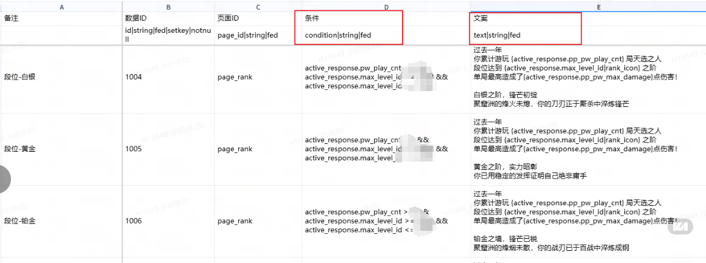
condition：命中条件。比如max_level_id >= 7500 && max_level_id <= 999999999，意思是"段位 ID 落在哪一个区间的玩家，展示哪一行文案"。
text：展示文案，命中后页面上该显示什么文字。
同一页面下各行 condition 互斥，一个玩家只命中一行；不同页面之间独立，可以合并到同一个测试账号。
到这里，自动化测试的输入就已经齐了。 condition 定义了"谁该看到这一行"，text 定义了"该看到什么"——两者合在一起就是一个完整的预期结果。不需要人手给 85 个分支写测试用例，配表本身就是可机器执行的验收标准。
核心思路只有一句话：预期不用人工写，配表就是预期——每个 configId 的 condition（数据层判断）+ text（渲染层文案）本身就是断言标准，用例只需要给"通用执行场景怎么走"，数据差异由配表驱动自动判断对错。
skill 要做的事也就清楚了，对应五步 + 一条支线。
简单记：算 → 验 → 定 → 跑 → 报（+ 审）
算阶段：配表 condition → 集合覆盖算最少账号
把配表每一行的 condition（如 max_level_id >= 7500 && ... <= 999999999）翻译成"字段→典型值"的造数补丁。同一页面内的分支通常互斥（段位11档必须分给不同账号），不同页面的分支正交（段位 vs 开箱 vs 镖客可以塞进同一账号）——这是个经典的集合覆盖问题，账号数收敛到"分支最多的那个驱动页的分支数"做到用最少的账号全覆盖每一行condition。
增加自检：①覆盖率→②造数命中率（condition-eval 反查每条分支是否真的被满足）都是脱离浏览器的纯计算，跑得快、可反复迭代。
验阶段：反向校验配表本身有没有漏配（正向流程测不到的盲区）
正向流程有个隐含假设——配表是完整的。但真实情况是：产品设计配表可能本身漏配了枚举。比如段位字段 DB 里真实玩家分布在 11 个档，配表只配了 7 档；漏掉的 4 档，正向流程永远测不到，因为配表里根本没有对应的行，自检①也全绿。
解法：拿 DB 里字段的真实枚举/区间分布，去减配表覆盖集，差集就是疑似漏配。离散枚举用 SELECT DISTINCT 对比；连续字段（段位/战力等）按声明的 bands 分桶计数对比。每条疑似漏配都会带上真实玩家计数和一个可复现的样本 role_id，方便直接生 cookie 注入页面坐实是不是真的漏了。只报告不阻断，最终是否要补配表由需求方决定。
定阶段：定位典型角色，直生 cookie 注入（不改库、不改归属）
年报的典型数据挂在正式角色名下，不是造测试数据。核心做法是拿到"有这份典型数据"的那个角色的 role_id，直接生成 cookie 注入（ role_id → JWT → 注入浏览器）页面即可登录展示——彻底告别"改 ux 归属嫁接给测试账号"的老路线。
两条取角色路径，殊途同归都是拿 role_id 生 cookie：
新玩家（宣发有角/无角）：读提前设定好的固定账号清单，一次设定长期复用；
老玩家（活跃/回流）：运行时按分支 condition 只读查 ux 表，SELECT 满足该分支且命中真实玩家过滤（正则白名单+黑名单排除 QA 造数前缀）的现成角色。
关键铁律：只采真实玩家，禁采造数据——配表分支要的是真实玩家的复杂多维数据，不是"刚好满足单分支的最简造数"；找不到满足分支的真实角色时如实标"⚠️无法覆盖"并写明原因，绝不回退去改库凑数据。
跑阶段：跑 UI（委托 playwright-mcp-testing 执行）
本环节不重造浏览器执行引擎，年报专属的是"逐账号循环 + 数据展示断言"这层包装：每个账号一种典型数据，注入 cookie → 校验登录门禁 → 按主流程逐页翻页截图 → 四层断言判定该页展示是否正确。
四层断言：
接口层：调数据接口拿字段，用配表 condition 反查是否命中对应分支；
文案层：取页面渲染文本，和配表该分支的 text 比对关键词；
数值准确性：抽数据齐全的账号，页面展示值与角色真实游戏数据逐字段精校（口径/区间/派生逻辑对不对）；
显示完整性：图片裁切/变形/模糊、内容越界、异常留白错位检测——年报图多是高发区，量化指标+局部截图肉眼复核定级。
实际测试中踩过一个高频坑：翻页后页面还没渲染完就截图，拿到空白页或动画中间态。根因是年报每页加载的数据量差异巨大——有的页面数据稀疏瞬间完成，有的页面几十个字段+多张图片+入场动画需要数秒。固定 sleep 永远对不齐：设短了数据重的页面截到白屏，设长了数据轻的页面纯白等。
解决方式是：用渲染就绪信号取代固定等待。翻页后不数秒，而是持续检测五个信号：网络请求全部完成、图片全部解码、关键区域 canvas 已有像素内容、页面动画执行完毕（animationend / transitionend）、页面文本和布局连续两次快照一致。五个信号全部就绪才触发截图——数据量大时自然多等，数据小时不等，动画没播完就继续等，保证截到的永远是真正的完成态。
跑完还有一道闭环对账：配表有 N 条分支，实际跑完覆盖了 M 条。M < N 时必须补跑或给出说明，不允许静默漏测，覆盖率缺口必须显式可见，不能靠AI"感觉测完了"。
报阶段：报告 + 每账号汇总图 + 回归脚本
三件产物顺序固定：
① 测试报告（核心交付物）→ ②每账号截图汇总图（grid 平铺，报告里点链接直达）→ ③自包含 UI 回归脚本（固化账号+cookie+每页预期，下次直接复跑，不用再走配表/查表/找角色）。
看板式美化报告和截图画廊是①之上的可选增强，不能替代①。
审阶段（独立诊断）：后端代码审查，补上"配表+DB查不出来"的缺陷
前四阶段能验证"配表要求展示的，页面有没有展示对"，但有一个它验不出来的盲区：后端接口本身有没有把数据传全。
具体来说，如果后端代码里某个字段定义了、数据库也有值，但 service 层漏写了赋值语句，接口就会永远返回零值——配表对应的分支永远命不中，由于配表有兜底方案，页面上看起来一切正常，但实际该展示的内容被跳过了。又或者两个同类接口方法，一个做了校验一个没做，就是越权隐患。这类问题只看 UI 和数据库是发现不了的，因为页面不会报错、数据库也有值，问题出在"数据库到接口返回"这一段映射上——必须拉后端源码。
做这三件事：
字段映射比对：entity → model → service 三层字段做差集，找"定义了、取到了、但没赋值"的漏映射字段；
配表引用交叉验证：配表 condition 引用的每个字段，确认后端代码里确实有赋值路径；
同类方法一致性检查：结构相同的接口方法，校验逻辑是否一致，揪出漏校验。
先全量扫出可疑点，再拿真实 sample role_id 注入页面确认是否真的是 bug。这一步独立于前四阶段，不阻塞主流程，随时单独触发。
后端源码除了做审查之外还在"一次性初始化"中，把字段名、段位档位、模式枚举、DB 列映射、计算口径这些信息手写到 field-mapping.yjwj.mjs 里。后续阶段1~3 不需要再碰后端代码，直接读这个文件（说明书）就行，作用：
阶段1 算最少账号：需知每个字段的值域和分档规则，才能判断哪些分支互斥、需拆到不同账号。field-mapping 提供这些信息，否则连"这个字段有几档"都不知道，集合覆盖无从算起。
阶段2 查库找角色：condition 引用的字段，很多在 DB 里不是直接存的一列，而是后端算出来的（取最大、求和、计数等）。field-mapping 规定 DB 侧的等效查法，才能生成正确采样 SQL，查出真正满足 condition 的真实角色。
阶段3 跑 UI 断言：接口返回了一个值，需要知道它落到哪个区间、对应什么文案，才能判断页面展示是否正确。field-mapping 提供值域区间和含义映射，否则拿到一个数字也不知道期望是什么。
年报看起来是 UI 测试，但真正决定测试质量的不是"点页面"，核心是数据分析能力。
解析配表 condition、查 DB 枚举反查漏配、从真实玩家数据里采样定位角色。UI 只是最后验证结论的那一层。
后端代码在这里做了两件事：一是提前把字段名、段位档位、DB 列映射、计算口径反推出来写成 field-mapping，让阶段1~3 有据可依；二是阶段5 直接扫源码找漏映射和校验不一致，补上纯 UI 视角看不到的盲区。
以上是年报测试 skill 的设计思路——配表怎么驱动、五阶段怎么分工。下面进入AI测试链路关联skill改造，分层推进：
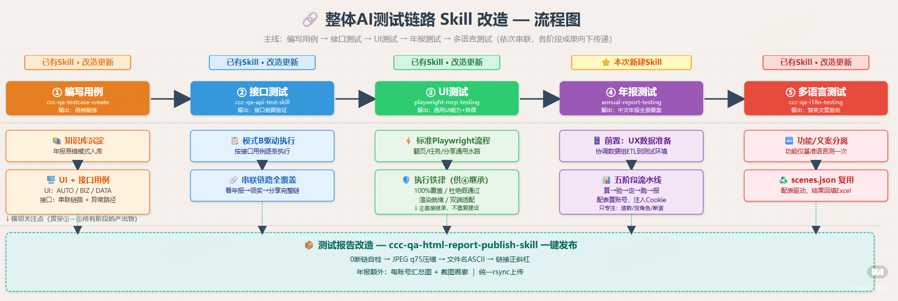
知识库沉淀：
增加年报数据总结，把年报专属的易错模式（三态混淆 AR-003、混合分支 AR-002、极值排版等）沉淀进知识库，后续写用例和 skill 断言时直接引用，不用每次从零讲。年报测试不为每条数据单独写用例——用例只描述通用执行场景（主流程怎么走），数据层面的对错完全由配表驱动的四层断言自动判断，省去人工为每个 configId 写预期的成本。
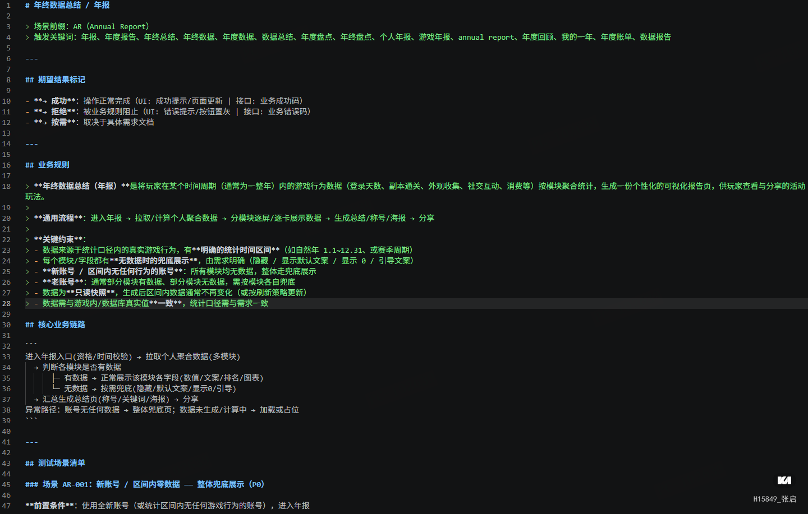
编写接口和 UI 用例（ccc-qa-testcase-create）：
产出2份不同用例
UI 用例（AUTO 通用操作 + BIZ 业务场景 + DATA 配表分支数据断言），覆盖首页进入、翻页切换、任务领取、分享、他人年报、兜底页等全部页面功能；
接口用例（多玩家类型串联链路 + 异常路径），覆盖看年报→标记看完→领奖、分享→他人年报→帮领奖励等完整调用链。
测试报告改造：
统一走 ccc-qa-html-report-publish-skill 一键发布在线测试报告。
其中年报测试额外产出每账号汇总图（grid 平铺）和截图画廊（按用例分组 + lightbox）。发布前过 publish_precheck.py 自检，0 断链才放行；截图压 JPEG q75、文件名纯 ASCII、链接正斜杠等改造完成。
以上一套为年报skill流程测试和关联skill改造全部完成。
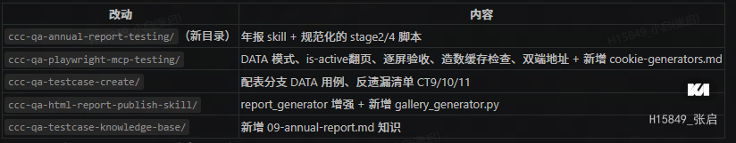
四条执行线简介（详见第四章实践成果）
接口自动化测试
委托 ccc-qa-api-test-skill 模式 B（用例驱动执行），按接口用例（多玩家类型串联链路 + 异常路径）逐条执行。
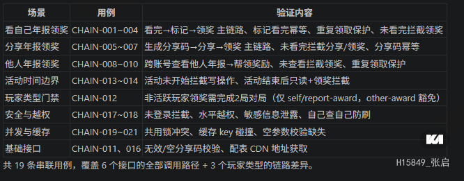
接口自动化测试实现原理：
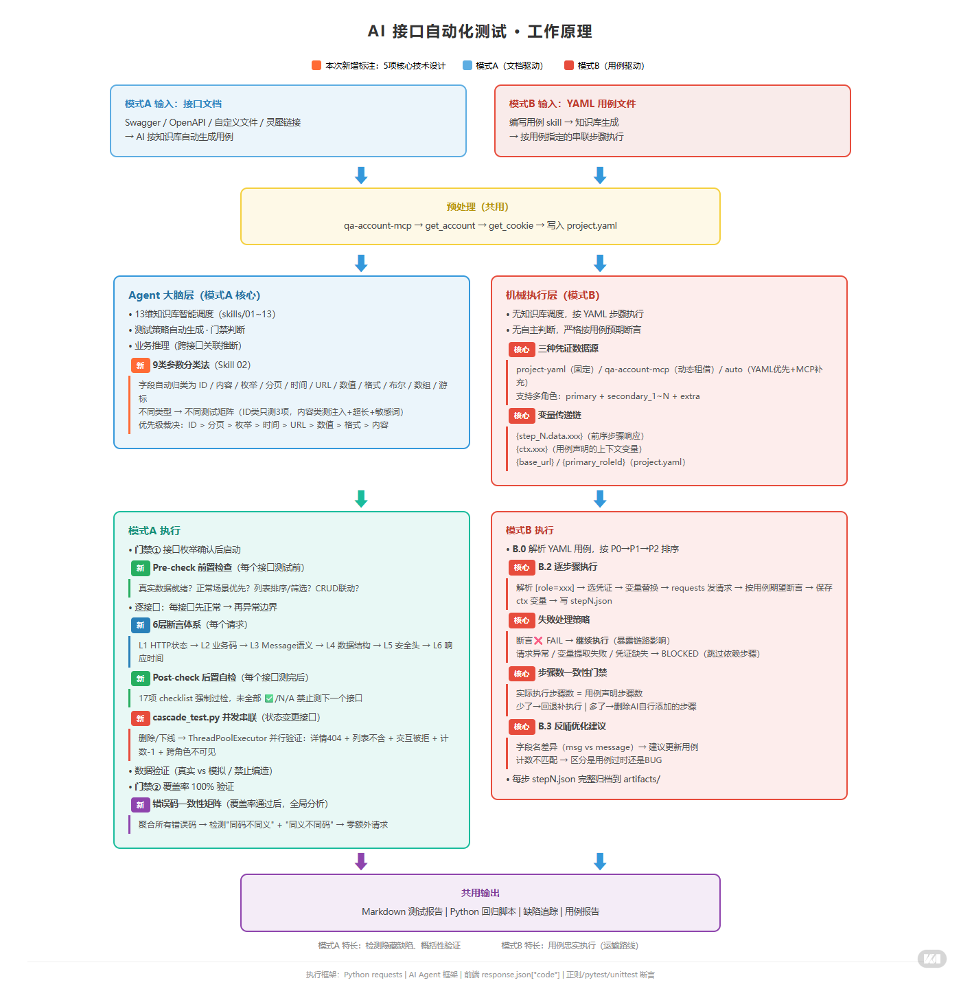
UI自动化测试
翻页切换、任务领取、分享链路、他人年报查看，这些是所有账号一致的通用水路，不涉数据分支。直接按 UI 用例（AUTO + BIZ）走标准 playwright-mcp-testing 流程执行，铁律同等生效：100% 覆盖不抽样、严格校验杜绝假通过、翻页依赖渲染就绪信号不固定 sleep、双端适配。
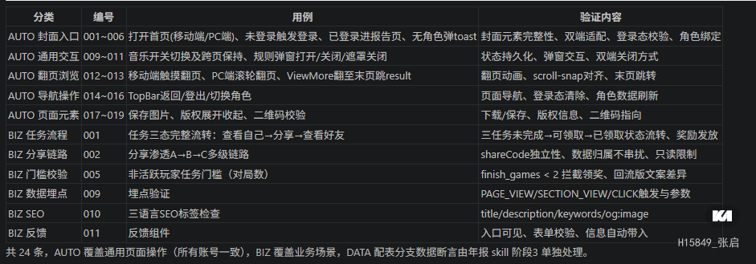
年报数据测试
按五阶段完整执行：算配表 → 验漏配 → 定角色 → 跑 UI → 出报告。
UI 执行完全委托给 ccc-qa-playwright-mcp-testing，年报侧不重造浏览器引擎，只包一层"逐账号循环 + 数据展示断言"。年报只专注"配表怎么翻译成造数""角色怎么找""数据展示对不对"三件事，UI 通用能力全部继承——100% 覆盖不抽样、严格校验杜绝假通过、显示完整性检测、双端适配、失败自愈——不重复建设也不和通用规范打架。
海外多语言测试
基准语言功能测透后，繁体和英文年报语言只做文案层校对，委托 ccc-qa-i18n-testing 执行。
介绍一下海外多语言测试skill实现方式：
多语言测试最容易被浪费的时间是"同样的功能流程，每个语言都重新点一遍"。ccc-qa-i18n-testing技能的核心思路是把功能测试和文案测试彻底分离：功能测试（点击流程、交互逻辑、接口）只在基准语言（通常英文或中文）做一次，其他语言只做文案层的四件事——文案匹配（页面实际文案vs配表该语言列逐条核对）、溢出截断检测（翻译变长后是否撑破容器）、翻译完整性校验（缺译漏译、占位符丢失）、跨语言逐key对比（同一文案key各语言并排，一眼看出哪个语言有问题）。
能这样做的关键前提是：同代码换文案，DOM选择器跨语言不变。所以基准语言跑测试时生成的交互场景脚本（scenes.json，记录弹窗、Tab等真实触发成功的选择器）可以直接复用到所有其他语言，不需要重新探索页面结构。执行时只需要一条命令加减参数：单语言用--lang，多语言批量用--langs一次跑完并输出跨语言对比表；页面需要登录态，账号就按语言分别通过account-mcp服务生成Cookie注入页面。批量多语言模式还额外做了时区/时间检测，通过基准比对法核对海外版本的时区转换是否正确等。
翻译文案的来源是一份可动态扩展语言列的配表（popo在线文档），技能能自动识别任意列(text 中文/text_en 英文 / text_cht 繁体.....）并推导出对应语言，新增一个语言不需要改代码。测试结束后还会把每条文案的测试结果（通过/失败原因/未测试原因）回填到本地Excel副本，方便QA和开发跟进，同时严格遵守"在线原文档只读，永不覆盖"的边界。这套分离思路把多语言测试的边际成本从"再来一遍完整功能测试"降到了"跑一遍文案比对脚本"。
年报同理：先用年报 skill 跑完中文版年报，产出的自动化脚本直接复用到海外年报，一次跑完繁体和英文版。
以上是测试执行的AI分工和流程。下面以永劫无间 D90 五周年年报为例，按照执行线展示完整跑完一轮的真实结果——从UI测试、接口测试、年报数据规模、覆盖率、测试报告、截图画廊到回归脚本。
接口自动化测试：
ccc-qa-api-test-skill，模式B（按照用例驱动执行）接口自动化测试，产物接口回归脚本。
接口自动化测试报告：
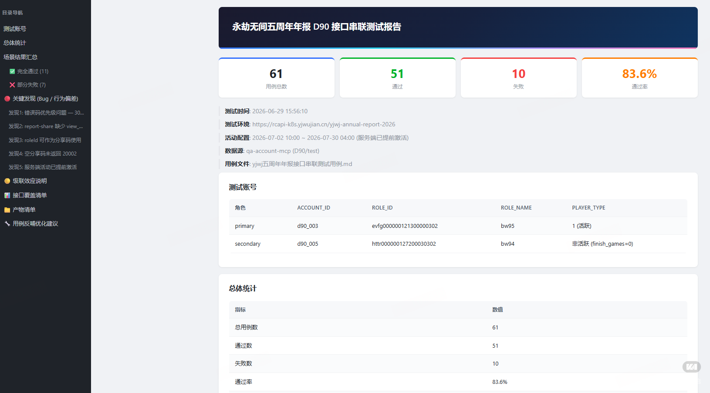
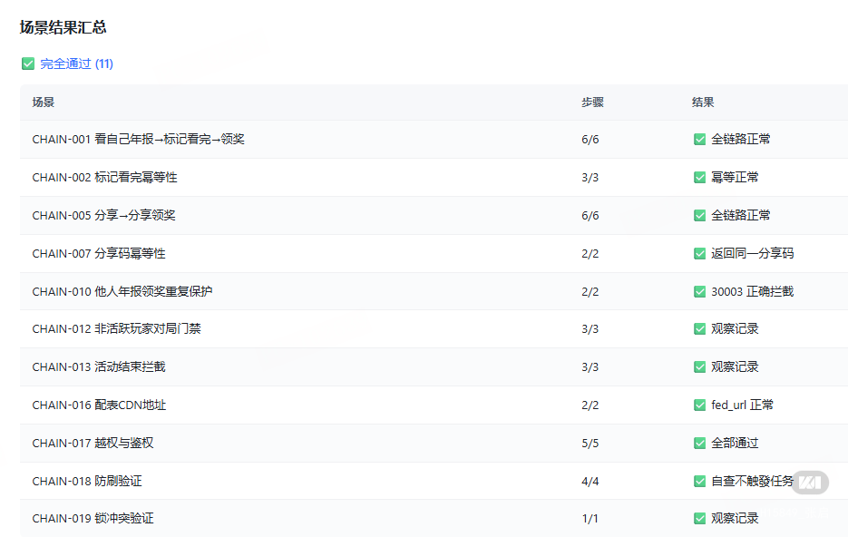
成果：ccc-qa-api-test-skill
严重度 |
类型 |
用例位置/影响链 |
现象 |
建议 |
P1 |
错误码优先级 |
CHAIN-004, CHAIN-006 |
非活跃玩家(finish_games=0)调用 self-report-award / report-award 返回 30010(对局数不足) 而非预期的 30009(未看年报)。对局数门禁优先级高于前置任务检查。存留上个版本的游戏对局代码代码。 |
确认产品意图：对局数门禁是否应最优先；确保两个错误码都可达 |
P1 |
前置校验缺失 |
CHAIN-006 step1 |
secondary 未执行 report-view，直接调用 POST /report-share 返回 code=0 成功，与预期 code=30009 不一致 |
确认意图：如必须先看完才能分享则补校验；否则更新用例预期 |
P0 |
分享码校验 |
CHAIN-008 step3 |
roleId 可作为 share_code 使用（后端同时支持 roleId 和 UUID），用他人 roleId 可查看其年报 |
确认产品意图：如不允许 roleId 作分享码，后端应拒绝非 UUID 格式 |
P2 |
参数校验缺失 |
CHAIN-011 step2 |
GET /other-report?share_code=不存在的code， 返回 code=0 而非预期 20002(参数非法)，空字符串被当作合法查询参数。导致前端页面处理未提示分享码不存在，直接展示数据空白页 |
增加 share_code 为空的参数校验，返回 20002 |
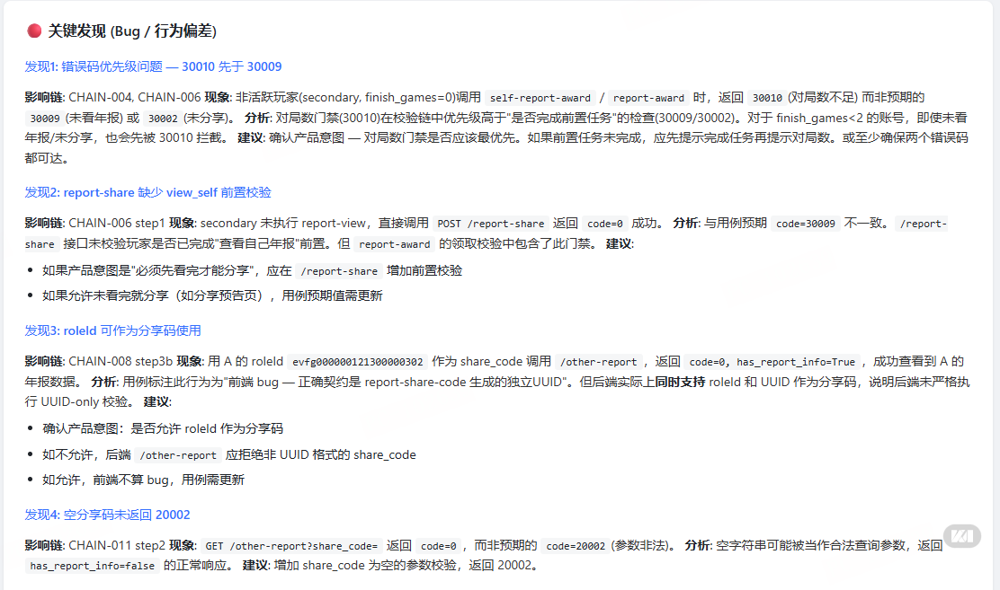
UI自动化测试
ccc-qa-playwright-mcp-testing skill，模式B（按照用例驱动执行）UI自动化测试，产物UI自动化回归脚本。
UI通用测试报告：
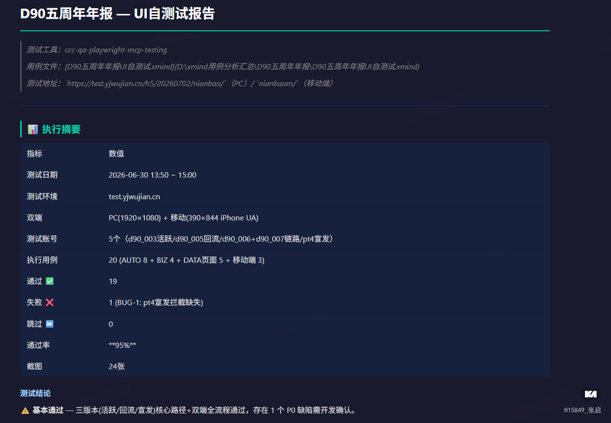
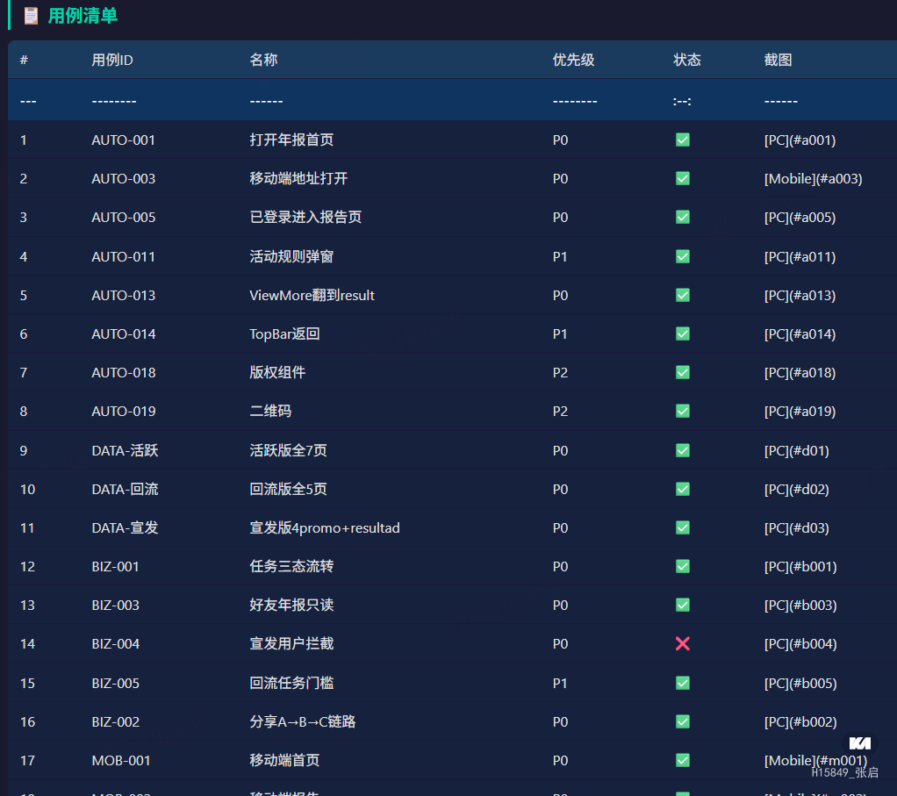
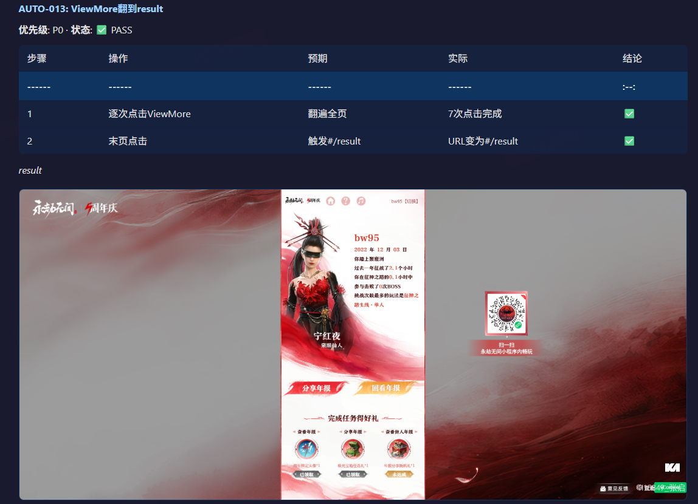
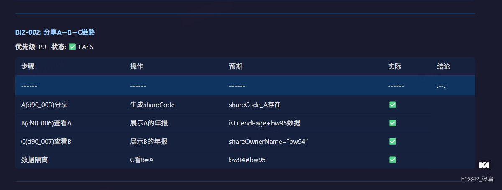
严重度 |
类型 |
位置 |
现象 |
P1 |
拦截遗漏 |
BIZ-004 宣发用户拦截 |
pt4 宣发用户访问好友分享链接未被拦截，展示了好友年报内容，应跳首页 |
P1 |
配表/文案 |
AUTO-004 规则弹窗 |
规则弹窗正文全是文案占位符，未配置实际规则 |
P1 |
路由 |
AUTO-009 回看年报 |
回看年报跳转 #/ 首页而非 #/report 年报页 |
P1 |
路由 |
AUTO-011 阅读我的年报 |
阅读我的年报跳分享子路径，无鉴权致内容空白 |
年报数据测试
ccc-qa-annual-report-testing skill执行，产物年报全量数据回归脚本（把账号 roleId/cookie/预期分支固化进自包含 UI 脚本，后续回归直接复跑，不再走配表/查表/找角色）。
测试报告：测试概览、账号×数据展示矩阵、缺陷清单、未覆盖原因、结论
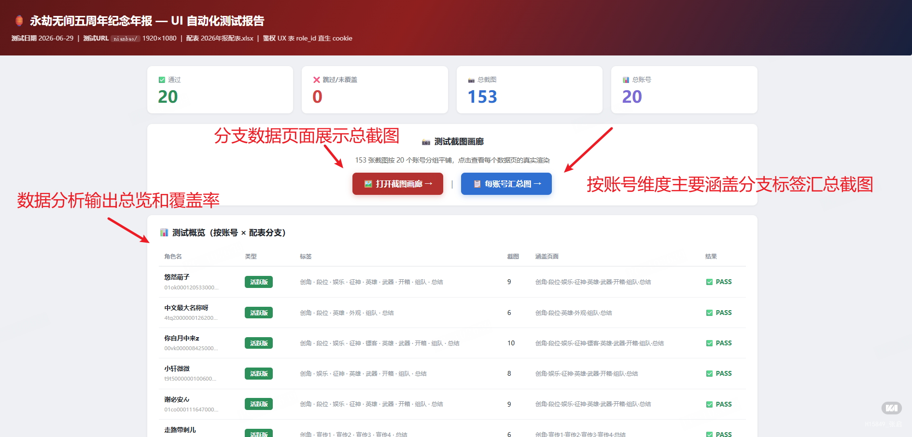
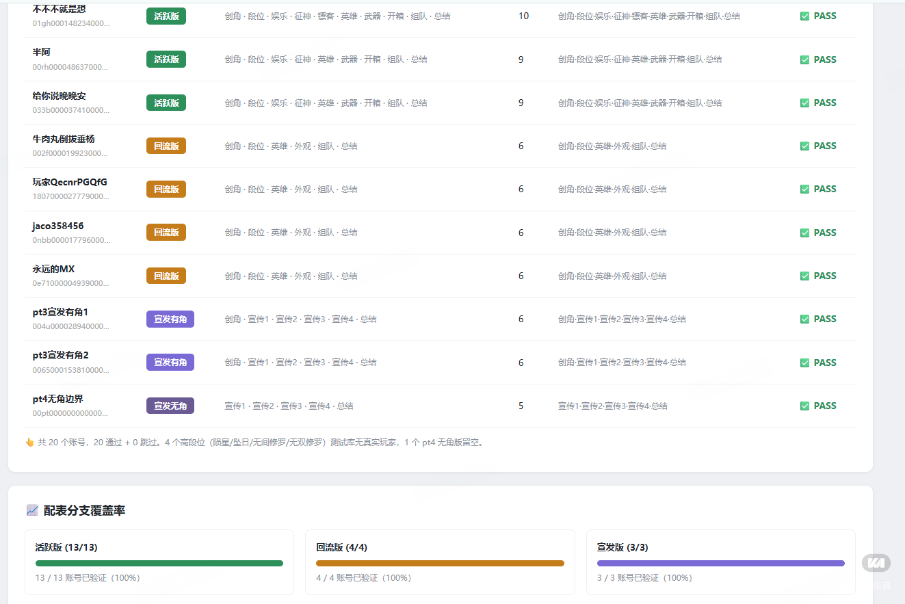
每账号汇总图：每个账号一张 grid 平铺汇总图（按 PAGE_SORT 排列），供报告矩阵每行链接跳转。
每账号汇总：标注该账号的典型数据特点（如活跃、回流、新玩家）
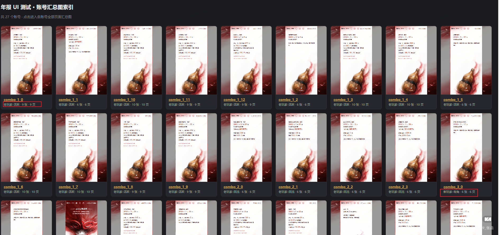
账号详情页：覆盖的哪一个condition、数据特点摘要总结，一目了然。
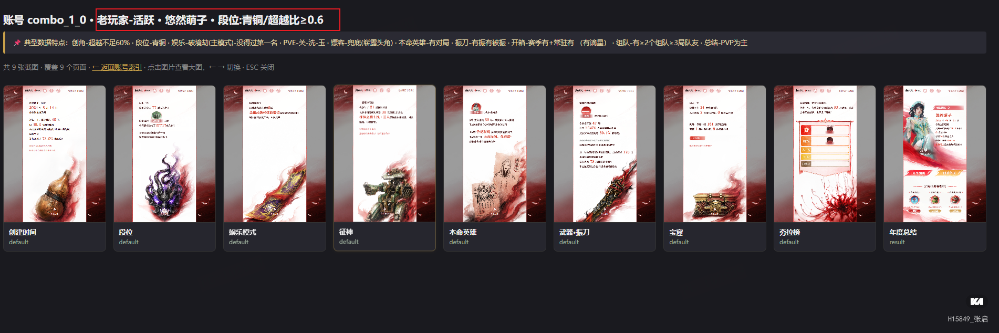
画廊：每账号跑完 UI 后，把所有截图按页面分组平铺成 HTML 画廊（点击放大、← → 键盘切换）。对 QA 自己来说，一轮跑完 85 个分支，不用逐张翻文件夹，一眼扫过去就能快速复核渲染结果、发现自动化断言漏掉的视觉瑕疵；回测时新旧两版画廊对比，改动影响一目了然。对前端、产品、设计同样直接可用，过去想走查"所有段位档位的展示效果"，得找 QA 一个个登账号截屏，几乎不可能看完 85 个分支；现在画廊一页平铺，几分钟扫完。
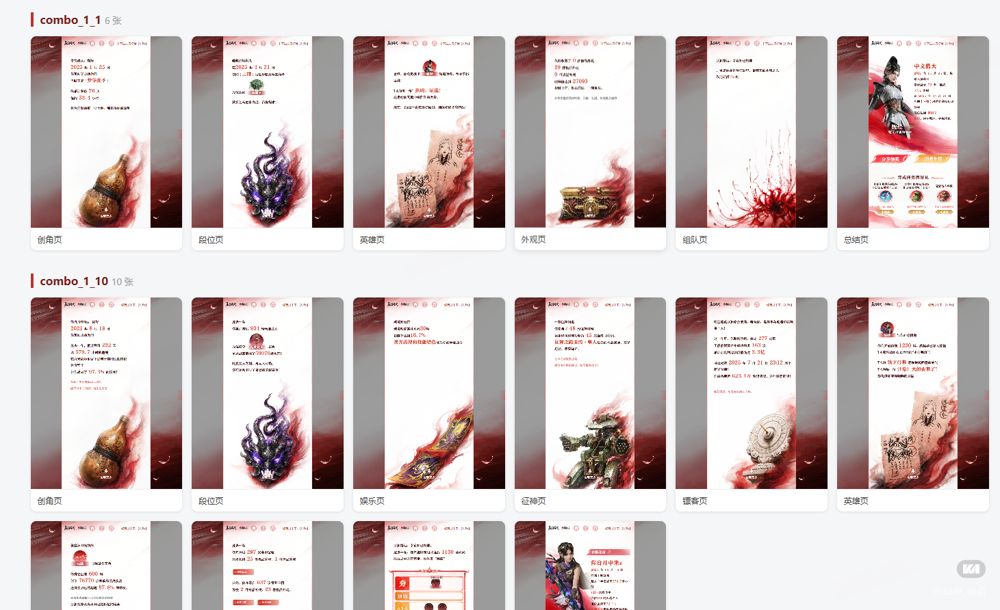
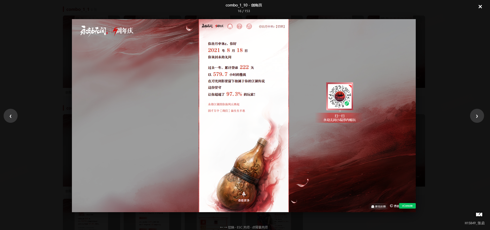
成果：ccc-qa-annual-report-testing：
严重度 |
类型 |
位置 |
现象 |
P1 |
变量绑定 |
回流总结页 2012 |
段位模式【】+段位名两变量均未填充 |
P1 |
管道未生效 |
回流创角页 2001 |
season_name 管道不生效，显示原始日期而非赛季名（全回流账号复现） |
P1 |
渲染缺失 |
回流社交页 2010 |
friend_list=null 但有 top_friend 时，社交页整页漏渲染 |
P1 |
配表/文案 |
宣发兜底 promo3/4 |
宣传页 3/4 文案为占位 11、22（配表 report_ad 未配置） |
P1 |
渲染缺失 |
娱乐页 1019/1020 |
四煞(sishajie)娱乐面板完全空白——接口有数据但前端无渲染模板 |
P0 |
字段映射遗漏 |
report_service.go |
ent_liumangjie_win_rate 漏赋值，API 永远返回 0； 六芒劫 2 条分支（1021 胜率≥50% / 1022 胜率小于50%）恒走错 |
海外多语言测试
ccc-qa-annual-report-testing（年报测试）和ccc-qa-playwright-mcp-testing（UI测试）生成的自动化脚本，给ccc-qa-i18n-testing执行，输出海外对应语言的测试报告。
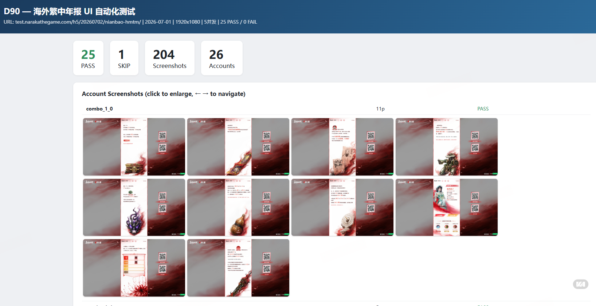
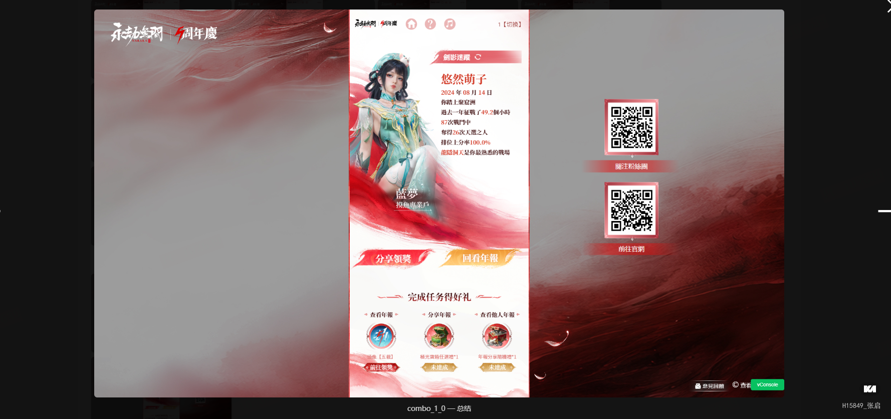
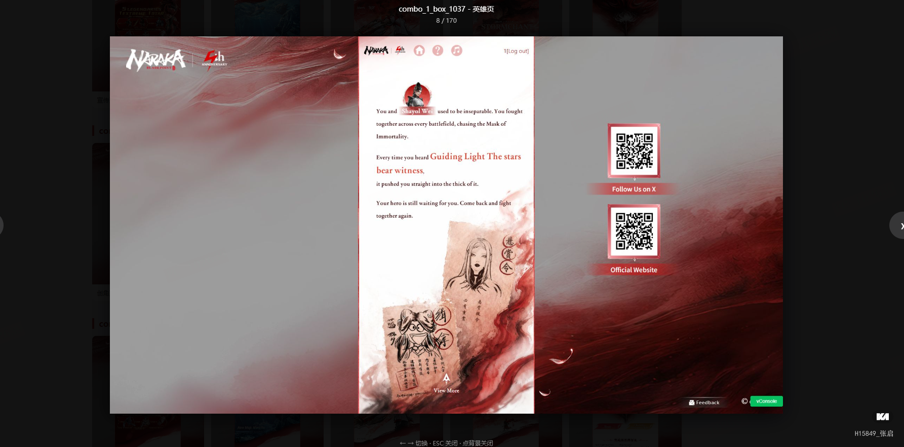
成果：ccc-qa-i18n-testing skill发现：
严重度 |
类型 |
位置 |
现象 |
P2 |
i18n |
翻页按钮 |
显示 key report.viewMore（应为查看更多） |
P2 |
i18n |
组队页 |
显示 key report.rankUp |
P1 |
i18n |
产品翻译未填写 |
繁体 宣发账号配表文案都不对 |
单从年报测试统计：人工测试 vs skill 自动化（按流程对齐）
环节 |
人工测试 |
skill 自动化 |
差距 / 说明 |
配表分支解析 |
读 85 行 ，每行 4 分钟 ≈5.7 小时(85×4=340min) |
解析配表 + 集合覆盖算法算账号覆盖 85 分支文案 ≈1 秒 |
人工无此手段，人工肉眼逐行读；算法直接算最少账号数并给出可量化覆盖率 |
构造测试账号 |
138 个数据库字段人工构造,每个字段 5 分钟 ≈11.5 小时(138×5=690min) |
定位角色 + 生成 cookie，账号自动查库 ≈几分钟 |
人工缺点：靠手写 SQL + 人脑换算有限； 自动化直接批量查库出结果 |
逐页核对 / 交互 / 图片扫查 |
每个账号都有16 页逐页核对，图片扫查 ≈ 15小时 |
并行多开浏览器执行测试和截图 + 四层断言 ≈15~40 分钟 |
人工肉眼易漏 0/null 混淆、单位换算错、图片轻微裁切；自动化四层断言 |
报告产出 |
无独立步骤，人工靠笔记 / 截图手动整理 |
报告 + 汇总图自动拼接 ≈数十秒 |
人工无此手段，自动化多一份可复用产出：画廊 / 截图汇总 |
配表数据检查 |
人工做不到（人工测试没有做这步） |
反查真实数据分布 ≈数十秒 ~ 几分钟 |
人工无此手段，skill 可以 |
代码审查 |
138 个字段逐个核对 ≈3.3 小时（多数人工无此视角 / 权限） |
拉代码扫 138 字段映射 ≈数十秒 |
人工无此视角，skill 可以 |
合计 |
前4项 ≈29.9 小时 + 代码审查 ≈3.3 小时=共 ≈33.2 小时(≈4 天) |
全流程 5 阶段首次跑完 ≈30~60 分钟，可量化验证 |
测试时间提效33~66 倍 |
核心思路回顾：不再为每个数据分支写用例，而是用配表condition驱动全流程——算最少账号→定位真实角色→注入Cookie→跑UI→自动断言→出报告。五个Skill各司其职（用例编写→接口→UI→年报→多语言），层层委托复用，不重复造轮子。
边界与下一步规划：
① 动画效果、视觉细节仍需人工把关，AI和人工各司其职。
② 接入 CI/CD 流水线：当前 Skill 仍需手动触发，后续可将配表变更事件挂钩自动触发回归，配表 MR 合入时自动 diff 变更的 condition、定位角色、跑 UI、产出增量报告。
③ 可后续到其他游戏年报或非年报类的"数据驱动展示"活动（如战报、赛季总结），skill架构可直接复用。